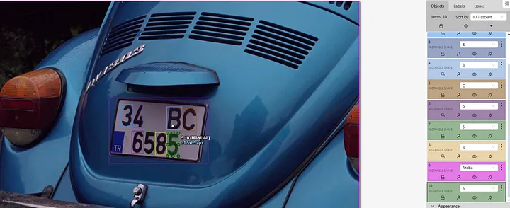
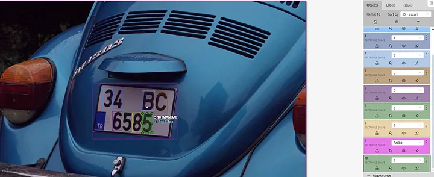

License Plate Detection Program
This project demonstrates how to implement a license plate recognition system using the YOLOv8 object detection model. The goal is to detect Turkish vehicle plates by training a machine learning model with annotated images.
Why did you do this project?
Object detection in images is one of the most impactful applications of AI. I wanted to understand how cutting-edge models like YOLOv8 can be practically used, and vehicle license plate detection is a meaningful and challenging real-world problem.
What was your contribution to this project?
I handled the entire pipeline including dataset collection, image annotation with CVAT, setting up the training environment, training the YOLOv8 model, and evaluating its performance on test images. I also created Python scripts for both training and testing phases.
What was the most challenging part, and how did you overcome it?
The annotation process was time-consuming and required precision. Another challenge was configuring the training environment (Python, PyTorch, CUDA), which I solved by using virtual environments and online documentation.
What skills did you gain from this project and what future projects will it help you with?
This project strengthened my skills in computer vision, data preprocessing, and using deep learning frameworks like Ultralytics YOLO. It has prepared me for more advanced tasks such as real-time video object tracking, OCR integration, and custom object training for industrial applications.